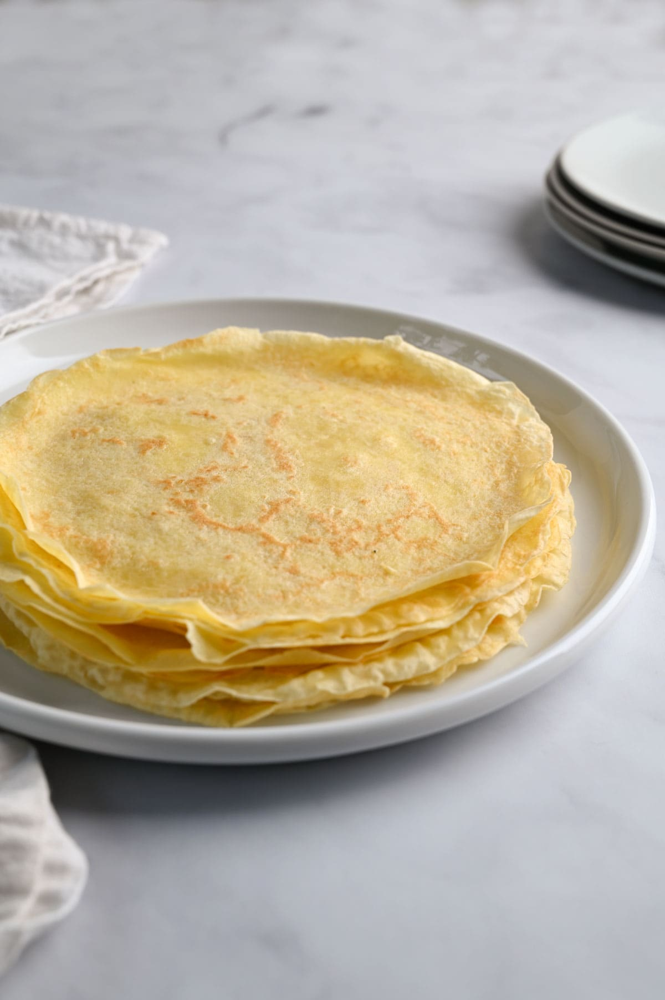

Crepes

Description
These crepes are ideal for breakfast, lunch, or dinner or any other time when you would like to eat them. They are great for sweet and savory meals and will satisfy your tummy with delicious flavor.
Ingredients
- 3 eggs
- a pinch of salt
- 1 Tbsp sugar
- 3/4 cups flour
- 1 cup milk
Steps
- Combine all ingredients in a blender until smooth. It is best if you can refrigerate the mixture for a few hours to let the bubbles settle.
- Heat a frying pan or griddle. I like to spray the pan with a cooking spray and wipe it out with a paper towel.
- Pour batter into the pan and tilt the pan to spread it evenly. The amount is about the number of tablespoons as 4 less than the diameter of the pan in inches.
- When the batter no longer looks wet (longer for crisper crepes), flip the crepe to cook the other side.
- Cook the back side for about 30 secondes (longer for crisper).
- Top with your favorite toppings and enjoy.
Home